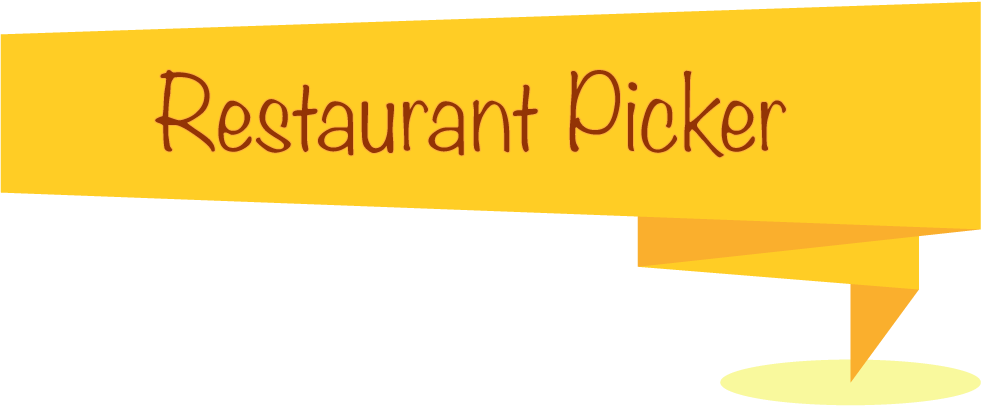

Salads
Main Dishes
Desserts
© Mona Bano 2015
Chicken Salad
Mushroom Salad
Back to Menu
© Mona Bano 2015
Broccoli Bear Meal
beef Mince Noodle
Back to Menu
© Mona Bano 2015
Cheesecake And Strawberry
Minions Dessert
Back to Menu
© Mona Bano 2015
Chicken Salad What we use: 200g Chicken Breast 1 Medium Tomato 100 Broccoli 150g Lettuce 100g Cabbage 150g Carrots 1 tsp Salt ½ tsp Black Pepper 1tbs Olive Oil How we do: Bring a pan of water to the boil. Add the chicken breast, oil, salt and pepper to it and boilthem for 30 minutes. Cut all vegetables and onions in small pieces. Mix all ingredients together
Back to Salads
© Mona Bano 2015
Mushroom Salad What we use: 200g Mushroom 1 Big egg 100 Broccoli 150g Lettuce 100g Cabbage 150g Carrots 1 tsp Salt ½ tsp Black Pepper 1tbs Olive Oil How we do: Heat the oil in a frying pan. Add chopped mushrooms to it and fry it for one minute. Bring a small pan of lightly salted water to boil and add Broccoli. Boil Broccoli for 2 minutes and then drain a colander. Fry the egg in another frying pan and cut it in small pieces Add all ingredients together in a bowl.
Back to Salads
© Mona Bano 2015
Broccoli Bear Meal What we use: 225g Broccoli 200g Rice 100 Green Pea 1 Medium Capsicum 100g Mushroom 1 tsp Salt How we do: Mix the green pea and mushrooms and fry in a pan. Bring a pan of salted water to the boil. Add the rice and boil it for 20 minutes. Bring another pan of lightly salted water to boil and add Broccoli. Boil Broccoli for 2 minutes and then drain a colander. Put rice in middle of the dish and pour other ingredients around it.
Back to Main Dishes
© Mona Bano 2015
Beef Mince Noodle What we use: 250g Beef Mince 1 Small Onion ½ tsp Tumeric 1 tsp Soy Sauce 1 tsp Black Pepper 100g Green Pea 1 Medium Capsicum 100g Mushroom How we do: Freeze the Beef Mince in noodle shape. Heat the oil in a frying pan. Add chopped onion to it and fry it for one minute. Then add frozen beef mince and turmeric and Soy sauce and Pepper to it. Fry Capsicum and Green pea in another frying pan. Mix all ingredients together.
Back to Main Dishes
© Mona Bano 2015
Cheesecake And Strawberry What we use: 50g Arnotts Biscuit 50g Butter 100g Creamy cheese ½ cup Sugar ½ tsp Salt ½ tsp Vanilla 1 Medium egg ½ cup Sour cream 2 Big Strawberry How we do: Place the biscuit in a food processor and make it finely crushed add butter to it and make a layer of it and put it in fridge. Place cheese, sugar and sour cream in a food processor and mix it to be smooth. Then add egg and vanilla to it and mix it. Preheat the oven to 160 degree and put the mixture in it and bake it for one hour.
Back to Desserts
© Mona Bano 2015
Minions Dessert What we use: 1 Small Banana 50g Almond 30g Cashew ⅓ cup Sugar ½ tsp Vanilla ½ tsp Cinnamon ⅓ cup Sour cream How we do: Cut the banana in small pieces. Mix Sour cream, sugar and vanilla. Put Almond and Cashew on top of the cream and pour cinnamon on it.
Back to Desserts
© Mona Bano 2015